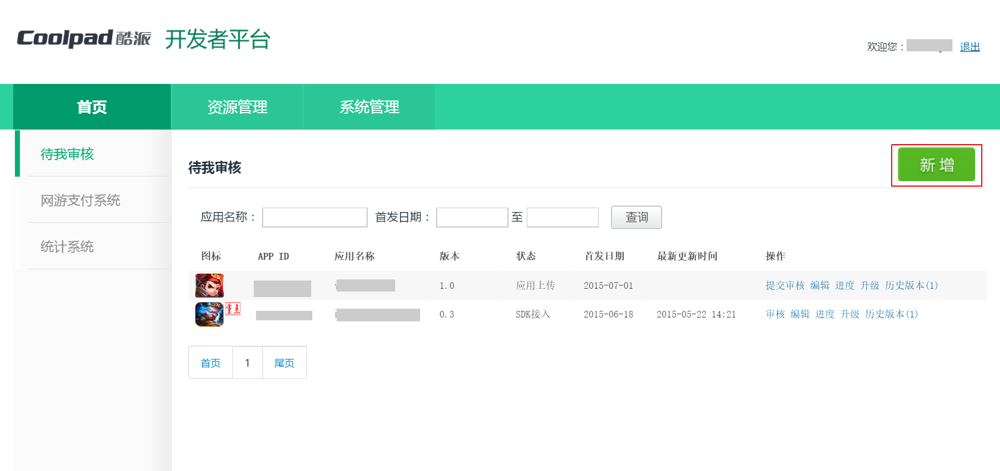
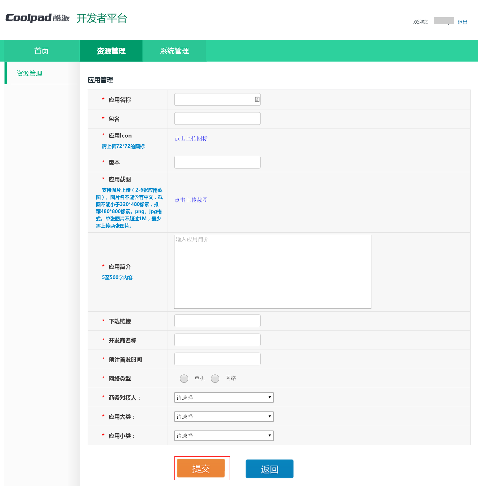
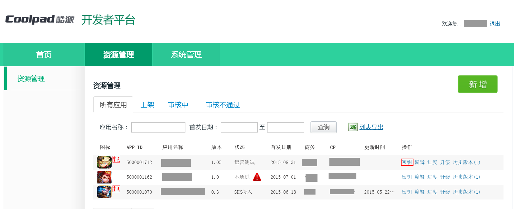
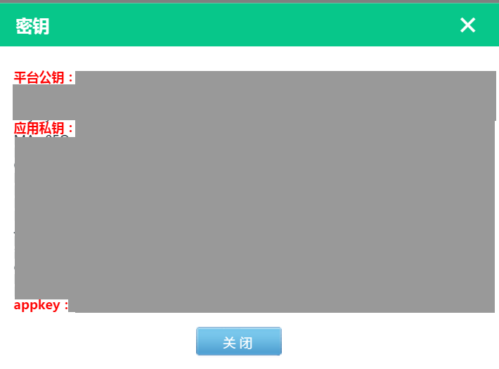

酷派官方后台地址：http://appdev.coolyun.com/ylra/
西瓜SDK所需的参数APP ID、平台公钥、应用私钥和appkey均在酷派后台获取。
获取参数步骤： 1. 注册开发者账号；
2. 进入“待我审核”，点击“新增”，创建游戏；

3. 填写游戏的相关信息并提交；

4. 在“资源管理中”即可看到游戏对应的APP ID；

5. 点击游戏所对应的“密钥”，即可获得平台密钥、应用密钥、appkey。
